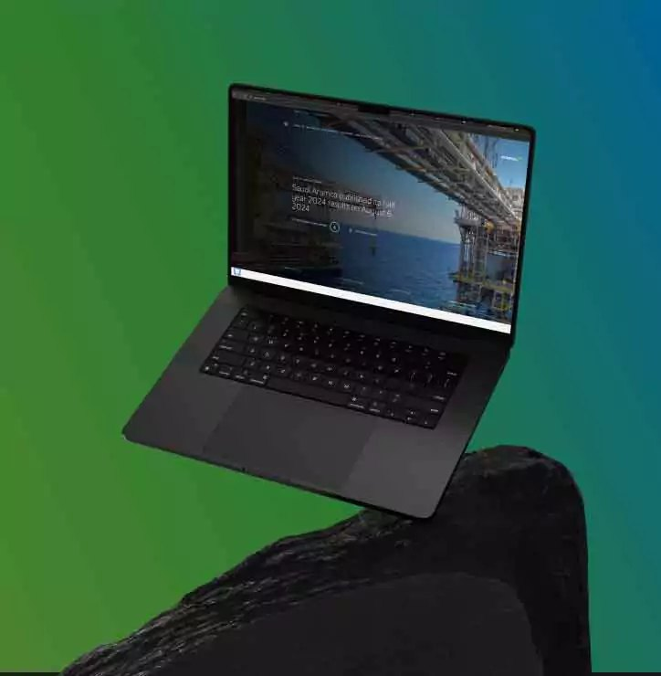

Aramco IKTVA:
A National Program, Online
Stakeholder Discovery · Information Architecture · Launch & Measurement
Woxro put me on the biggest client name the studio had: Saudi Aramco's IKTVA, the In-Kingdom Total Value Add program, and its site is the front door through which suppliers join one of the world's largest localization efforts. My job was the product spine of the revamp: who it's for, how it's structured, and how we'd know it worked.
01The brief I was handed
The brief sounded simple: revamp the iktva program's site. The reality underneath it wasn't. This wasn't a brochure for a company; it was the working interface of a national program, and it had to serve two audiences with opposite needs at once: suppliers trying to understand and join the program, and Aramco's own stakeholders, who would judge every page against the standards of one of the most brand-conscious organizations on earth.
I was the junior PM on an engagement where the client outnumbered us in every meeting. That shaped everything about how I worked: nothing could be an opinion. Everything had to trace to evidence.
02My part
I owned the research plan. Before any design work, I mapped who we needed to hear from and how: stakeholder interviews inside Aramco to understand what the program's owners actually needed the site to do, and surveys and focus groups with the supplier side, the people the program exists to serve. My job was writing the questions, running the synthesis, and turning what came back into personas the whole engagement could point at.
The synthesis discipline mattered more than the volume. I built the personas around jobs, not demographics: a supplier evaluating whether the program is worth joining needs different pages than one already in it and hunting for a specific requirement. Writing personas that way turns them from a slide decoration into a routing decision, because every page on the sitemap now has an answer to "which of these people is this for, at which moment."
I made the two-audience call. The research showed suppliers and program stakeholders needed different things from the same pages. The framing I pushed for: structure everything for the supplier trying to join, and let the brand standards act as the constraint, not the goal. That one decision shaped the content plan and the entire information architecture.
I owned the structure. The sitemap and information architecture were mine to draft and defend: what lived where, what a first-time supplier saw before a returning one, which journeys got the shortest paths. When a stakeholder asked why a page existed, the answer came from the persona work, not from taste.
I defined what "working" meant. Before launch, I specified what the analytics had to capture so we'd know whether the site did its job: visibility, visitor volume, and interaction with the program itself.


The program site taken from discovery to launch, and the information architecture I built for a two-audience national program.
03How we shipped it
The craft was a team effort, and it deserves saying plainly: Woxro's designers took the architecture through low-fidelity wireframes into high-fidelity mockups, and the engineers built and hardened it. My lane through that phase was keeping the loop honest: running the wireframes through feedback rounds with the client, putting the interactive prototype through usability testing before development, and holding QA sign-off across devices and browsers against the specs I'd written.
Enterprise projects don't die from bad design. They die in review, when a decision can't be defended. My real contribution was that by launch, every structural choice on that site had a research trail behind it, so review after review, nothing got unwound.
04What moved
The engagement's measured outcomes after launch:
Those are the engagement's numbers, not mine alone; a launch like this has many hands on it. The part I can claim without hedging: the structure those visitors landed on, and the research that shaped it, came through my work.
05What it taught me
At enterprise scale, "the user" is never one person. The suppliers used the site; the stakeholders judged it; the brand constrained it. And when you're the most junior person in a room full of a national company's managers, evidence is the only authority you have. I learned to bring research where others bring opinions, and that habit, built here under the harshest review conditions I'd ever faced, is the same one I later ran Booking Bash with for four years.